| Prev | Next |
Classification of Geometric Problems
Geometric problems can be broadly classified into 5 types.
- Convexity
- Proximity
- Geometric search
- Intersection
- Optimization
A brief description of each of these is given below.
A. Convexity
One fundamental problem in computational geometry is to find the convex hull over a given set of points. This problems can be likened to sorting in general algorithms. A number of apparently unrelated questions can be answered by using convex hull as the vehicle. Few definitions follow.
1. Simple convex polygon: Let S be a simple polygon defined by points p1, p2, ..., pn in 2D space. We say that S is a convex polygon if for every pair q1, q2 of points in S, the line-segment(q1q2) is entirely in L.
| 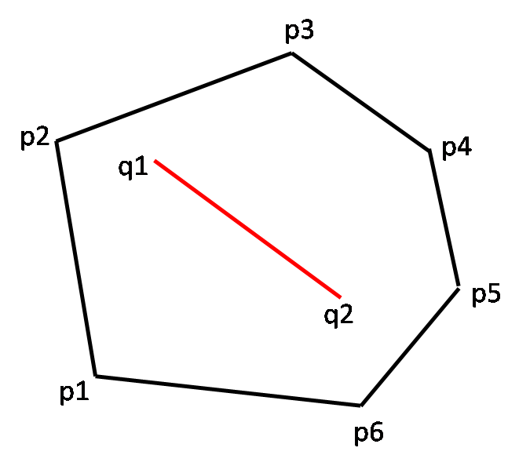 | 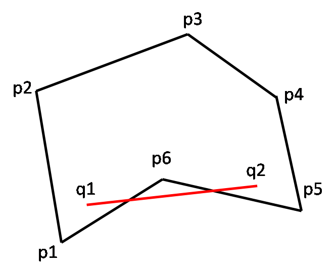 |
| Convex polygon | Not a convex polygon |
This definition can be extended to any dimension.
Convex set:Let S be a convex set defined by points p1, p2, ..., pn in kD space. We say that S is a convex set if for every pair q1, q2 of points in S, the line segment(q1q2) is entirely in L.
In a 3D case, a convex set would be the smallest polyhedron with many plane faces.
Intersection property of convex sets
[2D case] The intersection of two convex polygons in 2D space is a convex polygon.
To see this, consider the convex polygons S1 = A-B-C-D-E-F and S2 = 1-2-3-4-5-6.
- 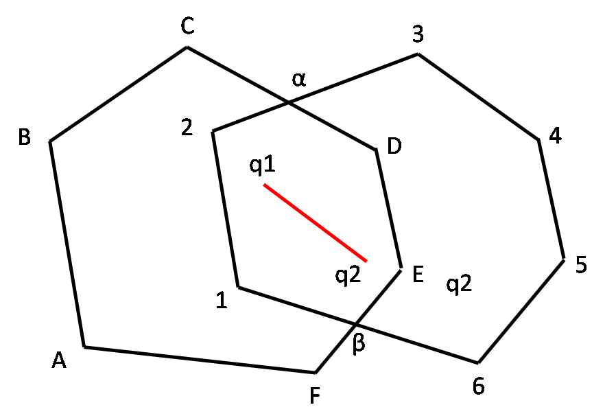
It is easy to see their intersection S = S1 ∩ S2 = 1-α-C-D-β-6, is also a convex polygon. i.e. for every two points q1, q2 in 1-2-α-D-E-β-6, the line-segment(q1q2) will be within the intersection.
The proof idea is as follows. Let q1 and q2 be two points in S. Since S is the intersection of S1 and S2, q1 and q2 are also points in S1 and S2. Since both S1 and S2 are convex by definition, the entire line-segment(q1q2) is in both S1 and S2. This implies line-segment(q1q2) is in S1 ∩ S2.
[Generalized 2D case] The intersection of any number of convex polygons in 2D space is a convex polygon.
This should be obvious. Try to extend the above proof.
[kD case]The intersection of any number of convex sets in kD space is a convex set.
First think about 3D and then generalize for any dimension. The same proof should very well work.
Convex Hull: Let S be a set of points p1, p2, ..., pn in 2D space. The convex hull CH(S) is the smallest convex polygon containing S.
- 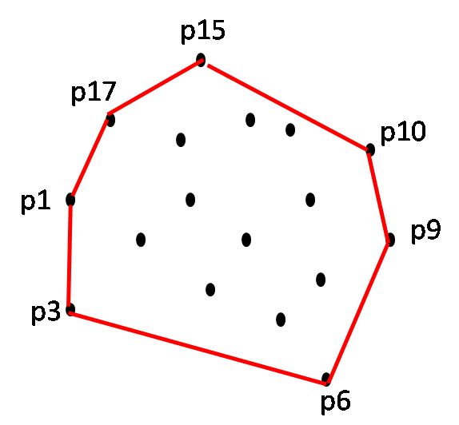
The following observations can be made.
- The convex hull of a finite set S of points in 2D space is a simple polygon.
- Each hull vertex of the polygon is in S.
- The points p1, p2, ..., pn are in the interior of polygon.
An extreme case is that every point ends up as a hull vertex. Another extreme case is that all the points form straight line. This is usually referred to as degenerate case.
| 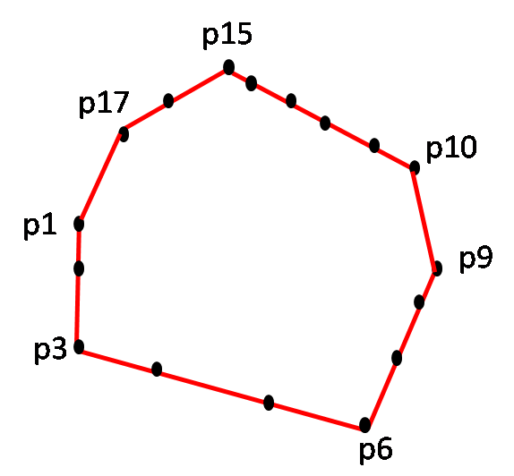 | 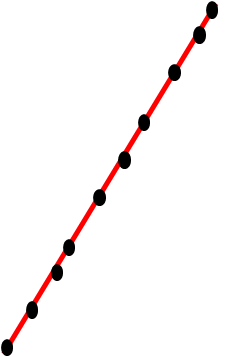 |
| An extreme case | A degenerate case |
This definition can be generalized to any dimension. In a 3D case, the convex hull would be the smallest polyhedron with many plane faces. A gift wrap is a good example of a convex hull in 3D space.
Property: Convex hull of set S equals intersection of all convex sets containing S (any dimension).
Given a set S of n points there are infinite number of convex sets that contain S. The convex hull CH(S), the smallest polygon containing S is simply the intersection of all these infinite convex sets.
To see this for 2D case, look into the following figure which has convex polygons that enclose S. Of course, infinite such polygons exists.

Proof idea: Let C be the intersection of all convex sets containing S. We know that C is convex (as per property 1) and hence contains S. To prove that C is the smallest set, let C' be an arbitrary convex set containing S. Then by definition of C, C is the intersection of C' and the other convex sets containing S. Therefore, C is a subset of C'. i.e. C is contained in every convex set containing S, so C is the smallest such set.
B. Proximity
Proximity problems arise in many applications where physical or mathematical objects are represented as points in space. Examples include
- Clustering: A number of entities are grouped together if they are sufficiently close to one another.
- Classification: An entity is assigned to a class based on its closest neighbor.
Nearest neighbor: Let p1, p2, ..., pn be a set S of n points in 2D plance. The nearest neighbor NN(pi) is a point pj such that d(pi, pj) < d(pi, pk) for 0 < k < n, k ≠ j and i ≠ j.
Closest Pair: Let p1, p2, ..., pn be a set S of n points in 2D plane. The closest pair CP(S) is a pair (pi, pj) such that the distance d(pi, pj) < d(pr, pq) where at least one of the points pr or pq is distinct from pi and pj.
Farthest Pair: Let p1, p2, ..., pn be a set S of n points in 2D plane. The farthest pair CP(S) is a pair (pi, pj) such that the distance d(pi, pj) > d(pr, pq) where at least one of the points pr or pq is distinct from pi and pj.
| 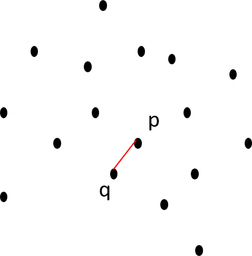 | 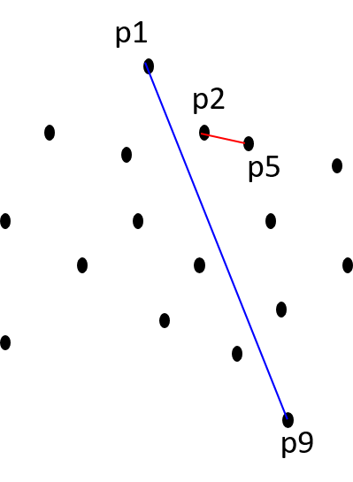 |
| Nearest neighbor of p is q | Closest pair: (p2, p5) and Farthest pair: (p1, p9) |
Euclidean-MST: Let p1, p2, ..., pn be a set S of n points in 2D plane. The Euclidean-Minimum-Spanning-Tree is set of interconnecting tree edges between all the vertices of S such that the total tree length is minimal.
In the examples given below, (A) is an Euclidean-MST while (B) and (C) are not.
- 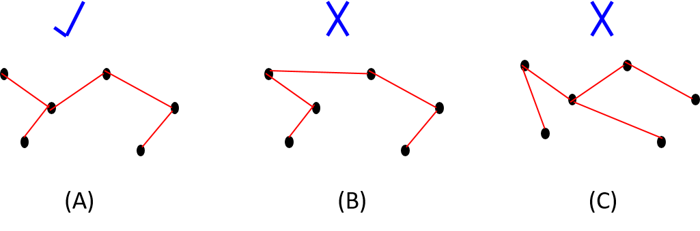
Triangulation: Let P be a polygon over a set of n points p1, p2, ..., pn in 2D plane. We say that P is a triangulated polygon if points are connected by line segments such that the interior space of the polygon are divided into non-intersecting triangular regions.
Given below is a polygon and its various triangulations. The last one is not a triangulation since the non-intersection region property is violated.
- 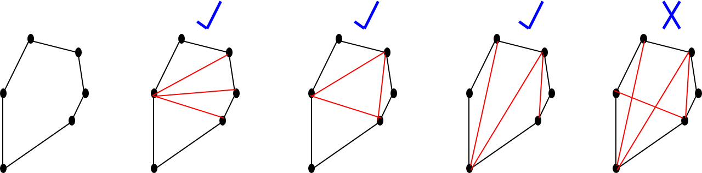
Maximum empty circle: Let p1, p2, ..., pn be a set S of n points in 2D plane. The maximum empty circle is the largest circle containing no points of the set S yet whose center is interior to the convex hull of S.
- 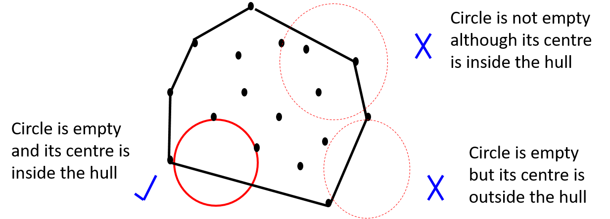
C. Intersections
Intersection problems and their variations arise in many disciplines, such as architectural design, computer graphics, pattern recognition, circuit design, etc. If it is just about whether two lines or line-segments intersect or not, geometric formulas are sufficient. We are interested in problems such as intersection of several segments, half-planes, or polygons. Before we start to define these problems, lets summarize how to determine the intersection of 2 entities.
Line segment intersection: Let (p1, q1), ...., (pn, qn) denote n line segments in 2D space. Determine all intersections.
Half-plane intersection: Let h1, h2, ... hn denote n half-planes in 2D space. Compute their common intersection..
Polygon intersection: Let P be a m-sided polygon defined by points p1, ..., pm. Let Q be a n-sided polygon defined by points q1, ..., qn. Compute their intersection.
- 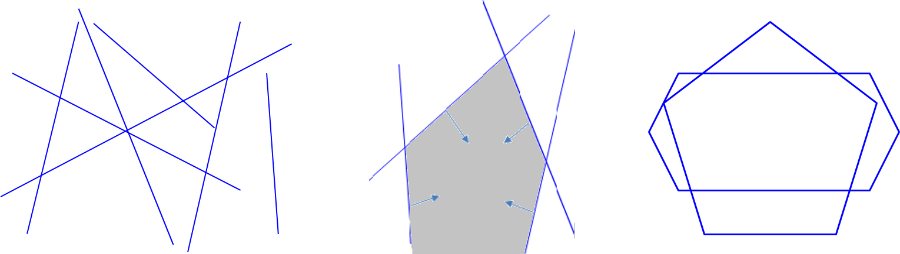
D. Geometric searching
Post Office problem: Given a fixed map of n post offices denoted by coordinates p1, p2, ..., pn, for an arbitrary points q1, q2, ..., qm, which is the nearest one for each point?
Point location problem: Suppose we have a subdivision G of the plane and we want to know which region of G a given query point is located.
- 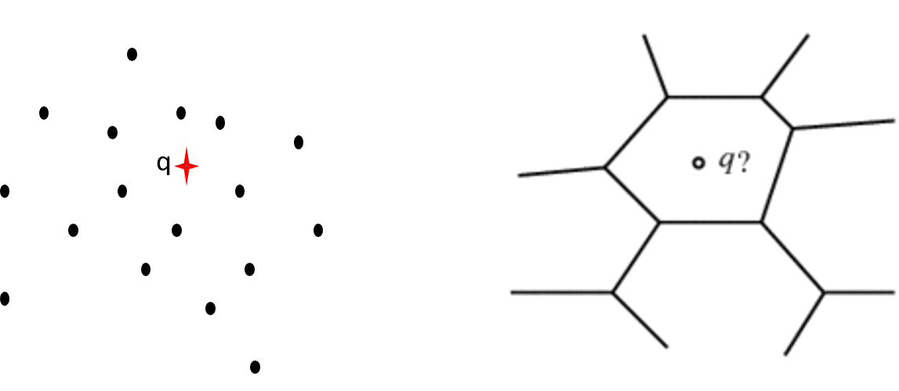